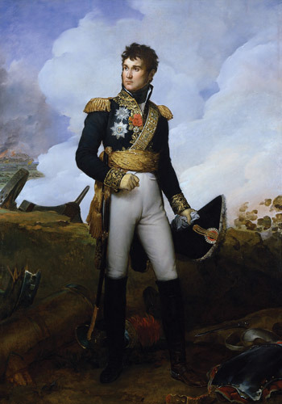
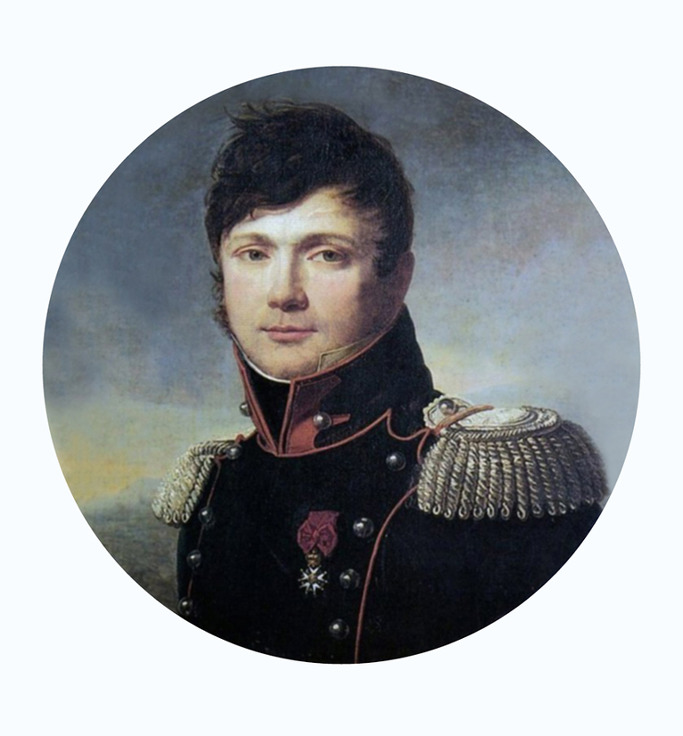
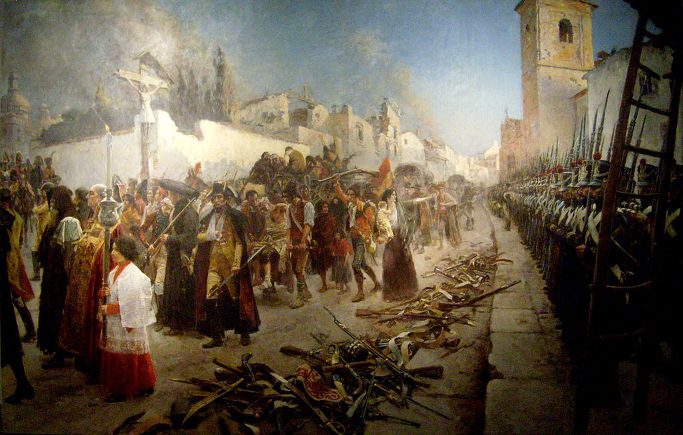
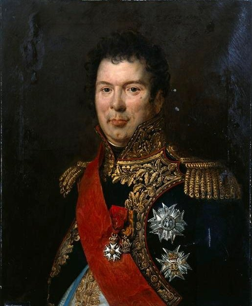
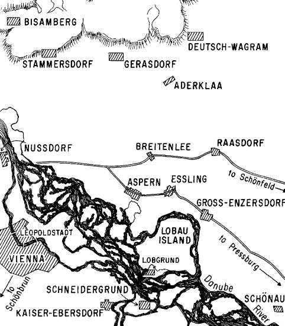

아스페른-에슬링 2편 - 우울한 원수
게시: 2017-02-12T21:47:43+09:00
가스코뉴의 열혈남아 장 란(Jean Lannes)에게 있어 나폴레옹을 따라 전투에 나간다는 것은 새로운 공로와 그에 따르는 영광을 얻을 좋은 기회였고, 그는 한번도 그런 기회 앞에서 머뭇거린 적이 없었습니다. 그러나 1809년 4월 19일 밤, 노이슈타트(Neustadt)의 나폴레옹 앞에 나타난 란은 몹시 의기소침하고 심란한 모습이었습니다.

(가스코뉴 출신의 유명한 남자라고 하면 달타냥이 1순위이고, 란이 2순위입니다. 몰랐는데, 달타냥이 알렉상드르 뒤마의 삼총사라는 역사 소설에 등장하기는 하지만, 실제로도 총사대 소속의 풍운아로 유명했던 역사적 인물이라고 하네요.)
나폴레옹도 란을 보자마자 평소 보아오던 란이 아니라는 것을 금방 알아챘습니다. 그는 란이 긴 포위전에도 끈질기게 버티던 스페인 사라고사(Zaragossa)를 마침내 함락시키고 난 뒤 쉴 틈도 없이 바이에른으로 달려왔다는 것을 알고 있었으므로, 이런저런 아부성 발언으로 그의 기분을 북돋아주려 애를 썼습니다. 심지어 이런 말까지 했지요.
"자네 말고 비엔나로 가는 길을 누가 더 잘 알겠나 ?"
다른 사람도 아니고 황제가 이렇게 입에 발린 아부를 늘어놓으며 그의 비위를 맞추려 노력했음에도 불구하고 란의 울적함은 가시지 않았습니다. 그는 "폐하께서 명령하시는 일이라면 뭐든지 해내겠습니다"라는 상투적인 말만을 남기고 당장 다음날 새벽 전투에 나가기 위해 잠깐 눈을 붙였습니다. 이후 벌어진 전투에서 나폴레옹과 란이 카알 대공의 오스트리아군을 철저하게 유린하는 모습은 이미 앞선 포스팅에서 보신 바 있습니다.
왜 열혈남아 란이 이렇게 울적했을까요 ? 란 본인이 아닌 다음에야 정답을 아는 사람은 없겠습니다만, 일단 너무나도 처절했던 사라고사 포위전이 큰 몫을 했을 것입니다. 그의 부관인 마르보(Jean Baptiste Antoine Marcellin de Marbot)에 따르면 전체 사라고사 시민들이 핏대를 세우고 항전했던 그 포위전은 여태까지 란이 경험했던 이탈리아나 독일에서의 전투와는 너무나 달랐던 것입니다. 사라고사의 항복 직후, 나폴레옹의 명령에 따라 거행된 승리 축하 미사에서, 란은 우울하고 무척이나 경건한 모습이었습니다. 열혈 자코뱅 답게 성직자나 귀족이라면 대놓고 무시하고 비웃던 란과는 전혀 어울리지 않는 모습이었지요.
그는 소규모의 부관들만 데리고 바이에른의 나폴레옹으로 가는 길에 고향 마을인 렉튀르(Lectoure)에도 잠깐 들렀는데, 그 작은 마을에 있는 4개의 성당을 모두 들러 큰 액수의 기부금을 냈습니다. 그 고향 마을 신부들은 악동 란을 매우 잘 알고 있었는데, 그가 평소와는 달리 절제되고 경건한 모습으로 미사를 드리는 모습을 보고 다들 놀랐다고 합니다.
또한 그는 파리 도착 몇시간 전, 굳이 도르도뉴(Dordogne)라는 별 볼일 없는 시골 마을에 들렀습니다. 이는 매우 이례적인 일로서, 원래 그는 임지를 오갈 때 정말 필요한 경우가 아니면 마을에서 쉬어가는 일이 없었던 것입니다. 알고 보니 이 마을에는 예전 시리아의 생-장-다크레(Saint Jean-d'Acre)의 무너진 성벽으로 돌격하다 목에 총상을 입고 쓰러진 란을 (비록 발목을 잡고 거칠게 끌고 오느라 머리통에 크고 작은 혹과 멍을 많이 남기기는 했지만) 구해줬던 대위가 살고 있는 곳이었습니다. 모두가 죽었다고 생각했던 란은 깨어나자마자 머리통의 상처에 대해 툴툴거리면서도, 그 대위에게 거액의 사례금을 주었었고, 그 대위는 예편한 뒤 그 돈으로 고향인 도르도뉴에 여관을 매입했던 것입니다. 이 재회는 나름 감동적인 것이었다고 란의 부관 마르보는 회고록에 기록했습니다.

(란의 부관이자, 나폴레옹 관련 회고록으로 유명한 마르보 장군입니다. 그의 기록에 따르면 란과 함께 하는 마차 여행은 꽤 고역스러운 것이었는데, 여행길에 잘 쉬어가지 않으면서도 부관들이 마차 안에서 뭔가 먹는 것을 엄금했기 때문이었습니다. 란은 전장에서의 용기와는 또 달리 매우 깔끔한 편이라서, 마차 안에서 누가 먹는 것을 역겹게 생각했고, 특히 젊은 부관들이 닭뼈 등을 마차 창 밖으로 던지는 행위를 극도로 혐오했다고 합니다.)
파리에 도착한 그는 가족과 보낼 시간도 거의 갖지 못했습니다. 전쟁터에서 전쟁터로 이동하는 몸이었고, 황제 나폴레옹이 이미 2주전에 전장으로 출발한 상태에서 도저히 양심상 오래 집에 머물 수가 없었던 것이지요. 그는 바이에른으로 출발하기 전, 의전상의 이유로 황후 조세핀을 예방했는데, 평소 란과는 사이가 좋지 않았던 조세핀조차도 '무슨 일 때문에 그렇게 우울한 얼굴이냐'라고 물을 정도로 안색이 좋지 않았습니다. 친하지도 않은 사이라서 (란은 애초에 나폴레옹이 조세핀처럼 나이 많은 과부와 결혼하는 것에 대해 반대했거든요) 말을 꺼리던 란은 조세핀이 집요하게 묻자 '이번 원정에 대한 느낌이 매우 좋지 않고, 가족을 떠나고 싶지 않습니다' 라는 지극히 약한 모습을 보이는 대답을 했습니다.
또 파리에서 만난 어느 신사가 신문에 대문짝만하게 게재된 란의 '빛나는 승리'인 사라고사 함락에 대해 치하를 하며 '볼테르가 칭송할 만한, 광신자들에 대한 합리주의의 승리'라고 말을 하자, 볼테르를 단 한 페이지도 읽어보지 않은 란은 씁쓸하게 이렇게 말을 했다고 합니다.
"그 사람들을 뭐라고 부르던 당신 마음입니다. 하지만 그 사제들... 굉장한 전사들이었습니다."

(자신의 군사 활동이 프랑스 혁명과 나폴레옹 제국의 이념을 유럽 대륙으로 전파한다는 순진한 란의 믿음을 산산조각 냈던 잔혹한 포위전의 결말, 사라고사의 항복입니다. 사라고사의 수비대와 민간인들이 굶주리고 병든 몸에 누더기를 걸친 채로도 당당하게 성문을 걸어나와 무기를 내려놓을 때, 란은 휘하 프랑스군에게 '똑바로 차렷 자세를 유지하라'라고만 했을 뿐 아무 격려사도 하지 않았고, 스페인군에게는 단 한마디도 건네지 않았다고 합니다. 란은 수비대 사령관인 팔라폭스도 석방하려 했으나, 나폴레옹의 명령으로 어쩔 수 없이 압송해야 했습니다.)
파리에서 만난 또 다른 지인 하나가 '이번에도 쾌승을 거두고 빨리 돌아오시길 바란다'고 인사를 하자, 란은 이렇게 대답했다고 합니다.
"돌아올수 있을지 잘 모르겠소. 뭐 돌아온다고 해도 금방 또 다른 곳으로 떠나야 하겠지요. 전쟁을 하는 것이 황제의 운명이고, 그 뒤를 따르는 것이 내 운명이요. 언젠가는 우리 둘 다 죽겠지요. 지금이든 나중이든. 난 그저 우리 둘 다 다시 소년이 되었으면 좋겠소."
종합해보면, 란은 이번 원정이 자신의 마지막 원정이 될 것이라는 것을 군인들이 가지는 뭔가 알 수 없는 본능에 의해 예감했던 것 같습니다. 그리고 그가 그저 모험과 영광을 좇아 따르던 나폴레옹의 전쟁이 남기는 상처와 폐허를 스페인에서야 비로소 통감했고, 더 이상 그런 참극을 빚어내기가 꺼려졌던 것 같습니다.
그렇게 마음이 꺼림직해서였을까요 ? 란츠후트와 레겐스부르크에서 큰 공을 세우며 잘 싸웠던 란은 비엔나 점령 이후 도나우 강 도하 작전에서 큰 실수를 하나 저지릅니다.
빈 점령 전에 타보르(Tabor) 다리가 끊기는 바람에 도나우 도강에 어려움을 겪던 나폴레옹은 부교를 놓고 도강을 하기로 결정합니다. 그는 빈 주변에서 부교를 놓기에 적절한 위치를 찾도록 베르트랑 장군에게 명했고, 베르트랑은 카이저에버스도르프(Kaiserebersdorf)를 그 지점으로 제시했다는 것을 앞서 언급한 바 있지요.
그러나 적이 지키는 강변을 도하한다는 것은, 더군다나 부교를 놓고 도하한다는 것은 매우 위험하고 어려운 작전이었습니다. 나폴레옹은 그 위험을 줄이기 위해 기만작전을 펼치기로 합니다. 포병 장교인 송기(Nicolas-Marie Songis des Courbons) 장군이 별도로 제시했던 뉘스도르프(Nussdorf)는 빈에서 상류쪽으로 몇 km 떨어진 곳이었는데, 여기에도 부교를 놓기로 한 것입니다. 물론 이는 오스트리아군의 시선을 끌기 위한 목적일 뿐이었고, 주공은 어디까지나 에버스도르프 쪽이었습니다. 나폴레옹은 그 기만 작전을 란에게 맡깁니다.

(송기 장군입니다. 나폴레옹처럼 포병 장교 출신인 그는 이탈리아 원정은 물론 이집트 원정까지 나폴레옹을 따라다녔습니다. 뉘스도르프를 도하 지점으로 선택한 것을 보면 기술적으로 정말 우수한 장교였고 나폴레옹에게 능력을 인정받아 제국 출범과 함께 귀족 작위도 받았습니다. 다만, 이과 출신의 한계였는지 그다지 유명하지는 않있고, 바로 이 사건 다음해인 1810년 병사하고 맙니다.)
이런 기만 작전이 성공하기 위해서는 당연히 두 다리를 거의 동시에 놓아야 했고, 나폴레옹도 란에게 그 사실을 주지시켰습니다. 그러나 정작 주공 방향인 에버스도르프에도 부교를 놓을 준비가 전혀 되어 있지 않았습니다. 뒤에 더 자세히 언급하겠지만, 부교 건설에 필요한 자재가 충분치 않았던 것입니다.
그런데 란이 뉘스도르프 현장에 와서 보니, 송기 장군이 이 자리를 부교를 놓을 최적지라는 것이 이해가 갔을 뿐만 아니라, 부교 건설에 필요한 자재를 그저 앉아서 기다리기에는 너무 아까울 정도였습니다. 뉘스도르프 건너편에는 슈바르처-라켄(Schwarze-Laken)이라는 작은 섬이 있었는데, 그 섬과 도나우 강의 좌안 사이는 무척 짧을 뿐만 아니라 이미 다리까지 있었던 것입니다. 게다가 우안으로부터 그 섬까지는 도나우 강폭이 그리 넓지 않아서, 기습적으로 섬을 점령하기만 하면 다리를 놓기도 쉬워 보였습니다. 바로 인근인 스피츠(Spitz)에는 오스트리아군 진지가 있었으므로, 자신들이 여기서 무엇을 기다리는지 알게 되면 기습 효과가 사라진다고 란은 생각했습니다. 실은 프랑스군이 이쪽으로 부교를 놓을 계획이다라고 기만하는 것이 자신의 임무라는 것을 깜빡했던 모양이지요.

(뉘스도르프는 지도 왼쪽 중단에 보입니다. 중앙 하단에 보이는 로바우 섬이 실제 주공이 이루어진 방향입니다.)
란과 그 휘하의 생틸레르(Saint-Hilaire) 장군은 별로 고민하지도 않고, 주변에서 끌어 모은 큰 보트 몇 척에 병력을 실어 슈바르처-라켄 섬으로 쳐들어갔습니다. 약 2개 연대 병력인 1500명을 몇차례에 걸쳐 투입했는데, 이것이 대실수였습니다. 이 섬에 있던 소규모 오스트리아 수비대는 즉각 경보를 울리며 스피츠의 본대를 불러왔고, 큰 보트 몇 척으로 조금씩 축차 투입되던 프랑스군은 그 수비대를 즉각 제압하지 못했습니다. 그러는 사이 다리를 통해 대거 대포까지 갖춘 대규모 지원군을 투입한 오스트리아군은 치열한 전투를 벌이며 프랑스군을 압도하기 시작했습니다. 프랑스군은 다시 보트를 이용해 병력을 빼내기 시작했으나, 이미 때는 늦었습니다. 프랑스군의 피해는 엄청나서 사망자만 5백에 부상자는 그보다 훨씬 많았을 뿐만 아니라, 퇴로가 끊긴 수백명은 오스트리아군에게 굴욕적인 항복을 해야 했습니다. 그야말로 참패였습니다.
훨씬 더 나쁜 것은, 이 모든 것이 뒤늦게 소식을 듣고 강변으로 달려온 나폴레옹의 눈 앞에서 벌어졌다는 점이었습니다. 나폴레옹은 이 어이없는 실수에 격노했고, 차마 란에게 야단을 칠 수 없었던 나폴레옹은 란의 부하인 생틸레르를 격렬하게 질책하기 시작했습니다. 이 패전의 실질적인 책임자였던 란은 비록 자신에게 향한 것은 아니었지만 황제의 분노에 움찔하여 슬금슬금 뒷걸음쳤습니다. 그러던 중에 발이 로프에 걸렸고, 란은 그만 그대로 뒤로 넘어져 강물 속으로 빠지고 말았습니다. 비극적인 패전 속에서 벌어진 뜻하지 않은 코미디같은 상황이었지만, 나폴레옹은 직접 강물 속에 뛰어들어 란을 일으켜세웠습니다. 이 두 친구는 물과 진흙에 흠뻑 젖은 상태로 한동안 말없이 서있었다고 합니다.
이 사건은 오스트리아군에게 쓸데없는 경고만 주는 결과를 낳았습니다. 원래 5월 초 카알 대공의 주력 부대는 빈 북서쪽 훨씬 먼 곳에 위치하고 있었으며, 나폴레옹의 맞은 편에는 고작 1개 군단만 버티고 있었습니다. 그러나 뉘스도르프에서 란의 어설픈 도강 시도가 참패로 끝나자 카알 대공은 나폴레옹이 빈 일대에서 도강하려고 한다는 것을 알게 되었습니다. 그는 병력을 이동시켜 나폴레옹과 도나우 강을 끼고 맞서는 위치로 이동하기 시작했습니다. 그러는 사이에라도 도강이 이루어졌다면 어땠을지 모르지만, 나폴레옹은 아직도 에버스도르프에서 도강을 시도할 형편이 안 되었습니다. 대 프랑스 제국 황제의 발목을 붙잡은 것은 매우 하찮은 물건, 바로 닻이었습니다.
--계속
Source : The Emperor's Friend: Marshal Jean Lannes By Margaret S. Chrisawn
Three Napoleonic Battles By Harold T. Parker
https://en.wikipedia.org/wiki/Nicolas-Marie_Songis_des_Courbons
https://en.wikipedia.org/wiki/Jean_Baptiste_Antoine_Marcellin_de_Marbot